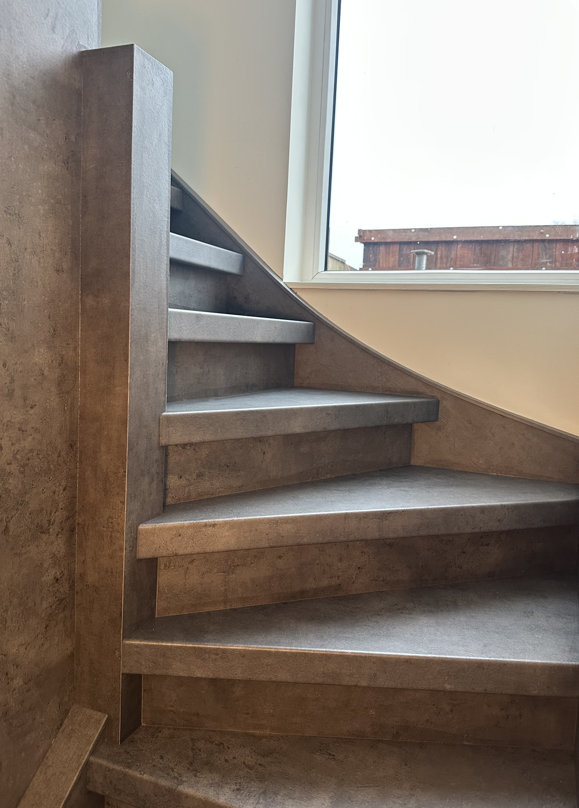
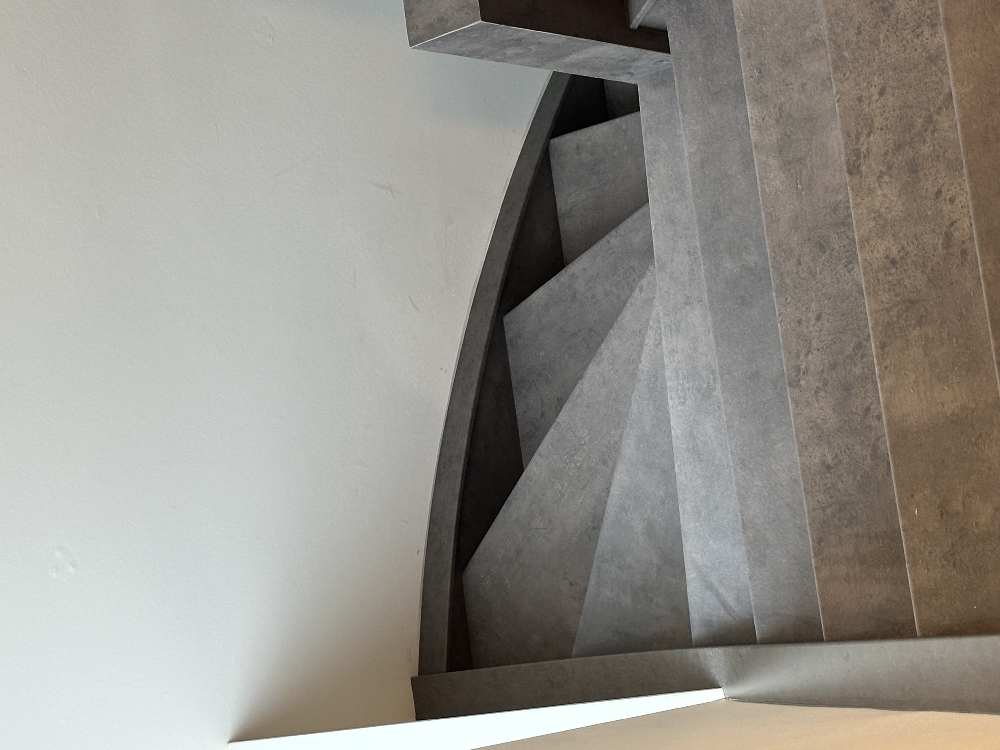
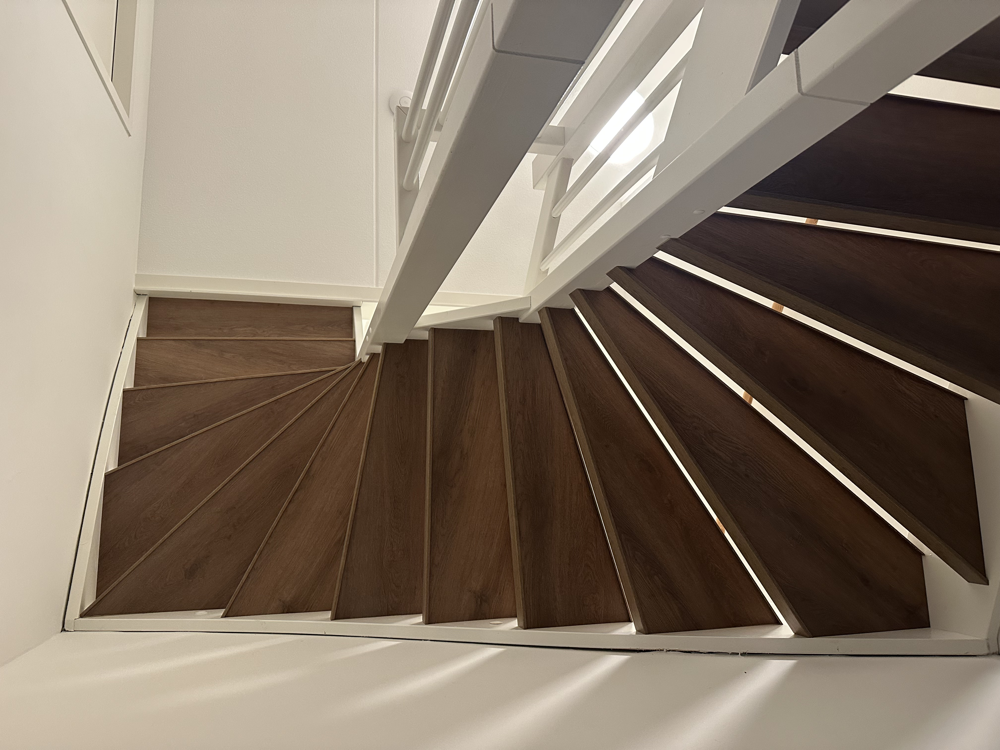
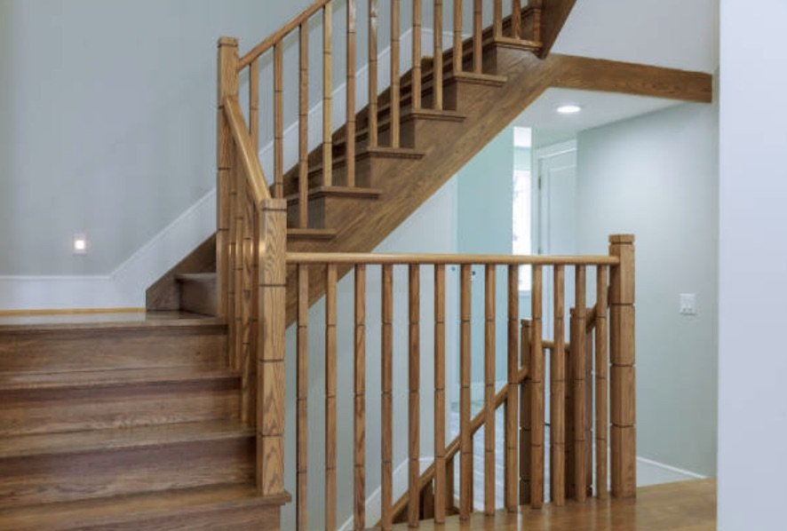
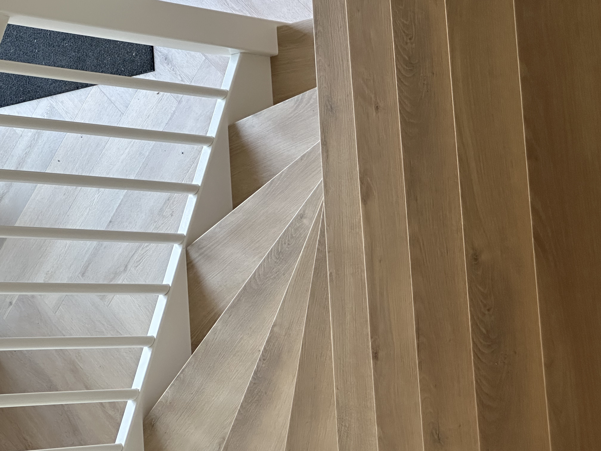
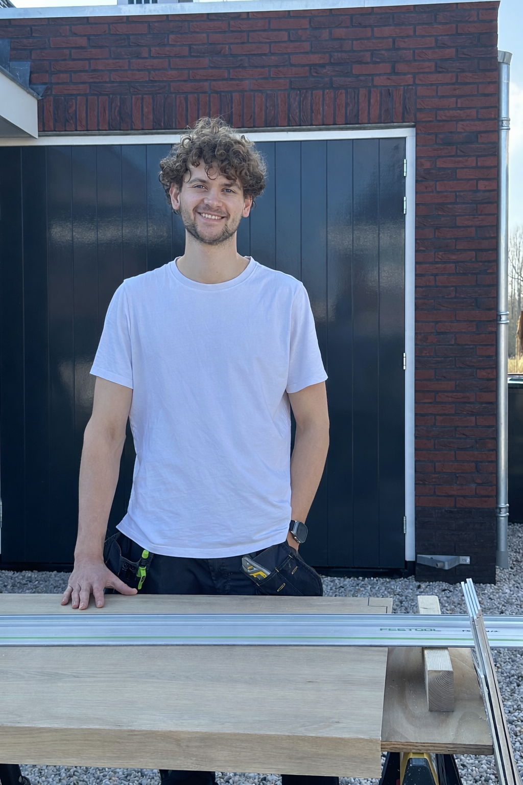

Een trap is meer dan een praktisch onderdeel van een woning — het is een blikvanger. Ik help klanten hun trap te transformeren met vakmanschap, precisie en hoogwaardige materialen. Heldere afspraken en een strak eindresultaat staan centraal.






Mijn naam is Jesse, het gezicht achter De Trappist. Na jarenlang in de zorg te hebben gewerkt merkte ik dat ik steeds sterker de behoefte voelde om met mijn handen te werken en iets tastbaars te maken. Ik wilde aan het eind van de dag kunnen zien wat ik had gecreëerd — werk waar ik trots op kon zijn.
Tijdens een oriëntatieperiode kreeg ik de kans om het vak van traprenovatie in de praktijk te leren. Ik ontdekte hoeveel vakmanschap, precisie en aandacht dit werk vraagt. Geen snelle oplossingen, maar zorgvuldig werken tot elk detail klopt.
Voor mij staat de klant centraal. Ik neem de tijd om elke trap zo netjes en precies mogelijk af te werken. Kwaliteit gaat voor snelheid — pas wanneer alles klopt, ben ik tevreden.
Voeg hier later je projecten toe (foto’s/voor-na).
Voeg hier later je contactgegevens of formulier toe.